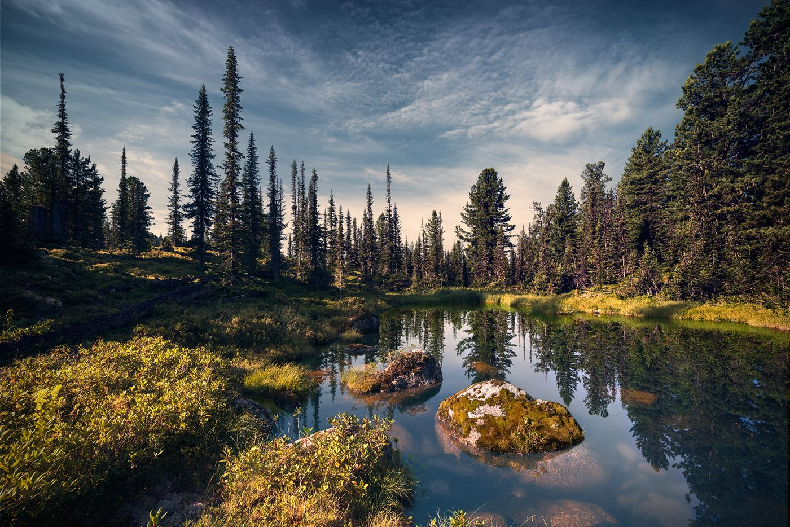
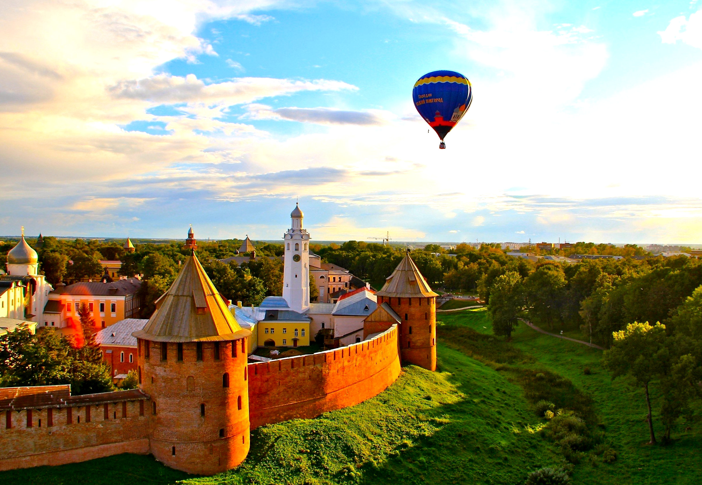
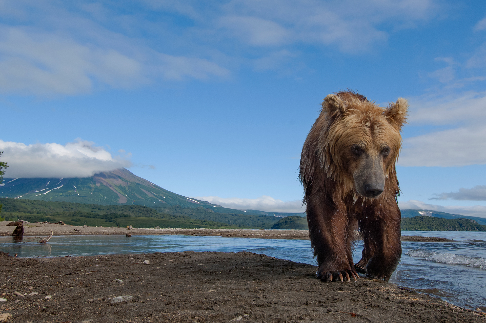

Туры по России
Интересные направления
Мы приглашаем вас отправиться в захватывающие путешествия по уникальным направлениям, которые раскроют вам новые грани России и позволят погрузиться в удивительные приключения.
Загадочная Сибирь
Откройте для себя бескрайние просторы Сибири, заснеженные леса и удивительные озера. Наши туры познакомят вас с таинственной культурой и историей этого уникального региона. Сибирь – это не только холодные зимы, но и теплые сердечные встречи.
Прекрасное Золотое Кольцо
Погрузитесь в атмосферу средневековья, пройдя по красивым городам Золотого Кольца. Архитектурные шедевры, древние церкви и уютные улочки создадут у вас неповторимые воспоминания. Наши туры позволят вам насладиться неповторимым колоритом этого исторического региона.

Прекрасные озера и горы Кавказа
Приглашаем вас на увлекательные путешествия по красивейшим озерам и горам Кавказа. Невероятные пейзажи, чистый воздух и гостеприимство местных жителей создадут неповторимую атмосферу покоя и приключений.
Экзотика Дальнего Востока
Отправьтесь в увлекательное путешествие на Дальний Восток, где сливаются воедино традиции востока и динамичная современность. Экзотическая природа, богатый культурный наследник и великолепные города ждут вас.